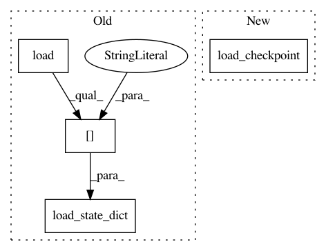

50fee59a2c60ca711b7959baa1711d586aa49758,TTS/server/synthesizer.py,Synthesizer,load_vocoder,#Synthesizer#Any#Any#Any#,81
Before Change
def load_vocoder(self, model_file, model_config, use_cuda):
self.vocoder_config = load_config(model_config)
self.vocoder_model = setup_generator(self.vocoder_config)
self.vocoder_model.load_state_dict(torch.load(model_file, map_location="cpu")["model"])
self.vocoder_model.remove_weight_norm()
self.vocoder_model.inference_padding = 0
self.vocoder_config = load_config(model_config)
After Change
self.vocoder_config = load_config(model_config)
self.vocoder_ap = AudioProcessor(**self.vocoder_config["audio"])
self.vocoder_model = setup_generator(self.vocoder_config)
self.vocoder_model.load_checkpoint(self.vocoder_config, model_file, eval=True)
if use_cuda:
self.vocoder_model.cuda()
def save_wav(self, wav, path):
In pattern: SUPERPATTERN
Frequency: 4
Non-data size: 4
Instances
Project Name: mozilla/TTS
Commit Name: 50fee59a2c60ca711b7959baa1711d586aa49758
Time: 2021-01-21
Author: erogol@hotmail.com
File Name: TTS/server/synthesizer.py
Class Name: Synthesizer
Method Name: load_vocoder
Project Name: Scitator/catalyst
Commit Name: 10e28a98e185571218b1dcb9f9b91f663a8ec673
Time: 2019-06-07
Author: scitator@gmail.com
File Name: catalyst/dl/scripts/trace.py
Class Name:
Method Name: trace_model_from_checkpoint
Project Name: mozilla/TTS
Commit Name: 50fee59a2c60ca711b7959baa1711d586aa49758
Time: 2021-01-21
Author: erogol@hotmail.com
File Name: TTS/server/synthesizer.py
Class Name: Synthesizer
Method Name: load_tts